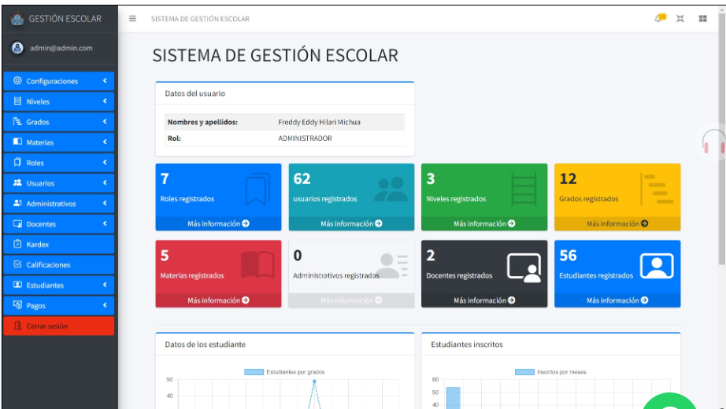
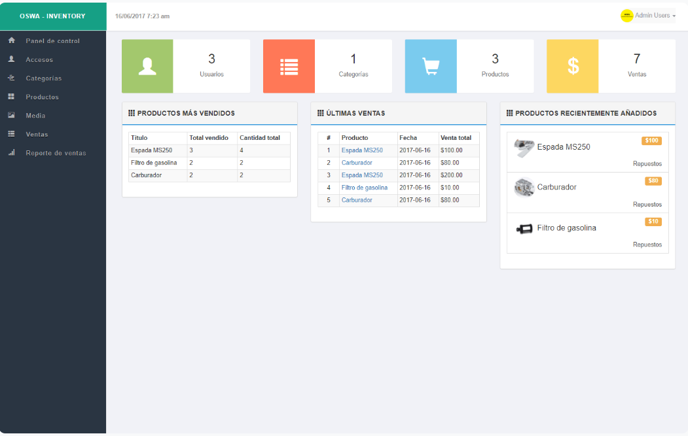
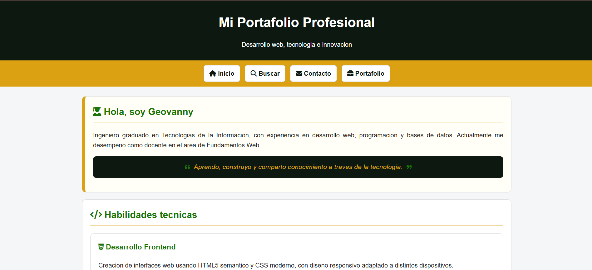

Desarrollo Frontend
Creacion de interfaces web usando HTML5 semantico y CSS moderno, con diseno responsivo adaptado a distintos dispositivos.
- HTML5
- CSS3
- Diseno responsivo
Desarrollo web, tecnologia e innovacion
Ingeniero graduado en Tecnologias de la Informacion, con experiencia en desarrollo web, programacion y bases de datos. Actualmente me desempeno como docente en el area de Fundamentos Web.
Aprendo, construyo y comparto conocimiento a traves de la tecnologia.
Creacion de interfaces web usando HTML5 semantico y CSS moderno, con diseno responsivo adaptado a distintos dispositivos.
Manejo de bases de datos relacionales y desarrollo de logica de programacion para resolver problemas de manera eficiente.
Uso de control de versiones y metodologias de trabajo colaborativo para proyectos academicos y personales.
He participado en proyectos academicos relacionados con programacion, bases de datos, desarrollo web y analisis de sistemas, aplicando metodologias de trabajo colaborativo y resolucion de problemas.
Desarrollo de paginas web con HTML semantico y CSS, practicando estructura clara, formularios, multimedia y diseno responsivo aplicado a proyectos reales.

Aplicacion desarrollada para administrar estudiantes, docentes y calificaciones, con manejo de bases de datos relacionales y una interfaz clara.

Software para el control de productos, entradas y salidas en una empresa, con reportes y seguimiento en tiempo real.

Desarrollo de una pagina web personal para mostrar proyectos y habilidades profesionales, usando HTML semantico y CSS responsivo.
| Tecnologia | Categoria | Nivel | Progreso |
|---|---|---|---|
| HTML5 | Frontend | Avanzado | 90% |
| CSS3 | Frontend | Intermedio | 70% |
| JavaScript | Programacion | Basico | 40% |
| Java | Programacion | Intermedio | 60% |
| SQL | Bases de datos | Intermedio | 65% |
| GitHub | Herramientas | Basico | 50% |
Dominar HTML, CSS y JavaScript para crear interfaces web modernas, responsivas y accesibles. Completar proyectos personales que demuestren mis habilidades de desarrollo frontend.
Desarrollarme como ingeniera especializada en tecnologias web y diseno de experiencias de usuario, contribuyendo a soluciones digitales innovadoras que mejoren la vida de las personas.
La tecnologia me permite crear herramientas que resuelven problemas reales. La combinacion de logica y creatividad que ofrece el desarrollo web es exactamente lo que me apasiona.